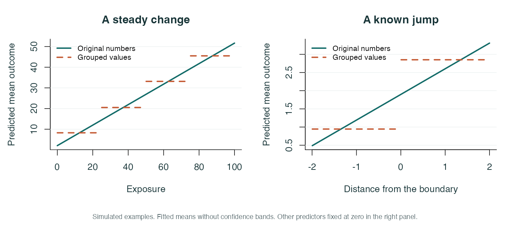

THE BINWISE R PACKAGE
Should you keep a variable as numbers, or put those numbers into groups? binwise helps you see what changes when you make that choice.
You might want to separate no participation from some participation, distinguish declines from increases, or describe combinations of trade relationships. Groups can make those differences easier to explain. They can also hide differences that matter.

What can you do with binwise?
- Look inside the groups. See the range of values and how many observations each proposed group contains.
- Compare your choices. Try equal-sized groups, equal-width intervals, or boundaries you choose yourself.
- Create the grouped variable. Add your chosen categories to your data while keeping the original numbers.
- Check what changes in the analysis. Compare models using the numbers, a smooth curve, and your categories. Then test their predictions on observations left out of model fitting.
You do not have to use every step. If you are preparing a descriptive table, counts and ranges may be your main concern. If you are fitting a model, the prediction comparisons give you another way to assess the choice.
Install and try it
Run these lines in the RStudio Console. R 4.1 or later is required.
install.packages("remotes")
remotes::install_github("preblek/binwise")
library(binwise)binwise is an early version and is not yet on CRAN. You can read the examples on this website without installing anything.
data("binwise_zero", package = "binwise")
groups <- bin_diagnose(
binwise_zero, "score", bins = 3,
separate_zero = TRUE, warn = FALSE
)
groups$binsThis example puts zero in its own category and divides positive values into three groups. The tutorial explains why that can be useful and how to add the categories to a data frame.
Choose an example
- When zero means something different. Keep no participation separate from some participation.
- When a few large values stretch the range. Check whether a single group hides very different observations.
- When the outcome changes gradually. See what gets lost when a smooth relationship becomes a set of flat steps.
- When there is a known jump. Try a case where a meaningful boundary helps predictions.
- When values cross zero. Separate declines from increases when direction is the question.
The working paper behind the case study
My working paper, Commercial Embeddedness and Sanctions Busting: Intra-Industry Trade, Dependence, and Economic Asymmetry, examines trade relationships involving countries under sanctions. It is available on APSA Preprints.
The paper case study shows why categories can be useful for describing combinations of variables. It also explains what we learned from additional prediction checks prepared for binwise. Categories help organize the patterns; a model that keeps the numbers and allows curves predicts better in those checks. Both findings matter when deciding how to use bins.
A tool for making the choice yourself
binwise helps you inspect the consequences of a choice. It does not decide that bins are right simply because a variable is skewed, contains zeros, or has negative values. Nor does a lower prediction error establish a causal effect.
Start with what the variable means and what you want to learn. Keep the original numbers, describe your boundaries, and check what the groups hide as well as what they reveal.